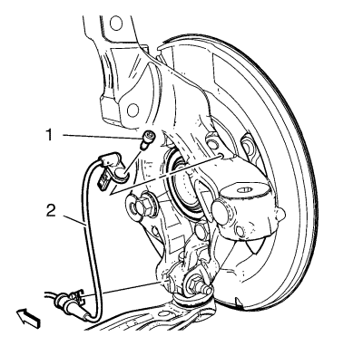
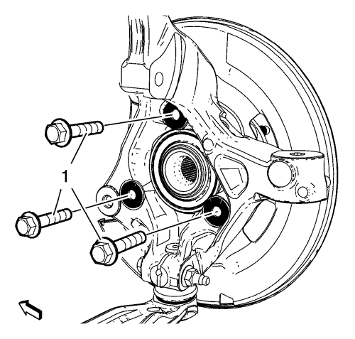
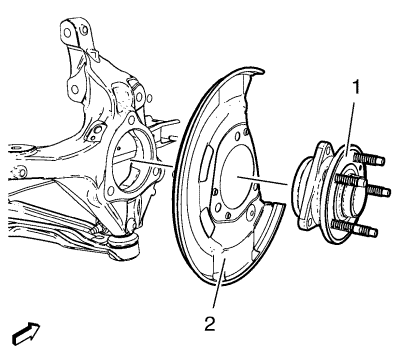

Sustitución de la chapa delantera de recubrimiento del freno
Herramientas especiales
EN-45059 Medidor de ángulos
Si desea informarse sobre herramientas regionales equivalentes, consultar Herramientas especiales
Procedimiento de desmontaje
- Elevar el vehículo y soportarlo de manera adecuada. Consultar Elevación del vehículo con un gato .
- Desmontar el disco de freno. Consultar Sustitución del rotor de freno delantero .

Atención: Sujete las pinzas de freno con alambre mecánico fuerte o equivalente cuando se separen del montaje y aún esté conectado el tubo flexible de freno hidráulico. Si no se sujetan las pinzas de esta manera, el tubo flexible de freno tendrá que soportar el peso de las pinzas, lo que puede provocar que se dañe el tubo flexible de freno y esto, a su vez, puede provocar una fuga de líquido de frenos.
- Desmonte el perno del sensor de velocidad de la rueda (1).
- Desmonte el sensor de velocidad de la rueda (2).
- Desmonte el mazo de cables del sensor de la velocidad de la rueda de la mangueta.
- Afloje el árbol impulsor de rueda del cojinete/cubo de rueda. Consulte Sustitución del semieje de la rueda delantera - lado derecho .

- Desmonte y DESECHE los pernos del cojinete/cubo de la rueda delantera (1).

- Desmonte de la mangueta el cojinete/cubo de rueda (1) y la chapa de recubrimiento de frenos delantera (2).
Procedimiento de montaje
- Coloque la chapa de recubrimiento de frenos delantera (2) y el conjunto cojinete/cubo de la rueda (1) en la mangueta.
Precaución: Consulte Precaución con las fijaciones en la sección Prólogo
Atención: Esta es una articulación de seguro de auto-retención que no requiere compuestos selladores de rosca. No intente limpiar las roscas con un macho de roscar estándar. De utilizarlo, podría ocasionar daños en las roscas de la articulación.
- Monte los NUEVOS pernos de montaje del cojinete/cubo de la rueda (1).
- Apriete los pernos de cojinete/cubo (1) en 3 pases, utilizando el medidor EN-45059
| 3.1. | Primer paso a 90 N·m (67 lib. pie) |
- Monte el mazo de cables del sensor de velocidad de la rueda en la mangueta.
- Monte el sensor de velocidad de la rueda (2).
- Monte el perno del sensor de velocidad de la rueda (1) y apriételo hasta 6 N·m (53 lib. pulg.).
- Montar el disco de freno. Consultar Sustitución del rotor de freno delantero .
- Monte el árbol impulsor de rueda que retiene la tuerca y la arandela. Consultar Sustitución del semieje de la rueda delantera - lado derecho .
- Desmonte el soporte y baje el vehículo.
| © Copyright Chevrolet. All rights reserved |